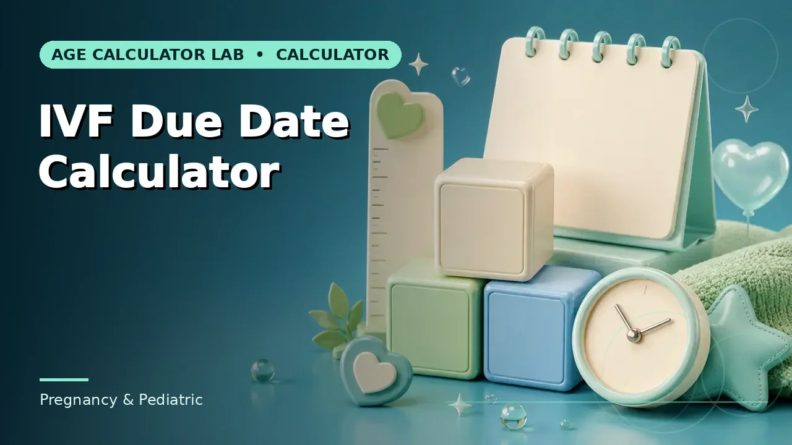
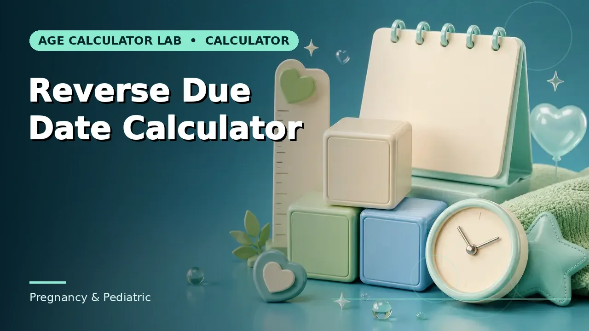

Quick answer
Add 261 days to a day-5 transfer or 263 to a day-3 transfer. Because conception timing is documented, IVF dating is more precise than LMP-based dating.
The one thing IVF dating gets right
Conventional due-date calculation carries an assumption it cannot verify: that ovulation occurred on day 14 of a 28-day cycle. For many people it did not, which is why LMP-based dates are often revised after a dating scan.
IVF removes that uncertainty. Fertilisation happens in the laboratory on a recorded date, and the embryo's age at transfer is documented. There is no need to estimate when conception occurred, because it is known. This makes IVF due dates one of the few situations where the initial estimate rarely needs revising.
Use this guide with the right tool: Open the IVF Due Date Calculator for an estimated due date calculated from an embryo transfer date and embryo day. If the question shifts, compare it with the Reverse Due Date Calculator or the Pregnancy Due Date Calculator.
Embryo day and the arithmetic
The calculation works backwards from the 280-day gestational model. Gestational age runs about two weeks ahead of conception, so from the fertilisation date the remaining span is 280 − 14 = 266 days. Subtract the embryo's age at transfer to get the interval from transfer to due date.
A day-5 transfer therefore adds 261 days; a day-3 transfer adds 263; a day-6 transfer adds 260. Getting the embryo day right matters — a two-day error is small in absolute terms but shifts every subsequent gestational-age milestone by the same amount.
Frozen transfers and donor cycles
For a frozen embryo transfer the same arithmetic applies, because what matters is the embryo's developmental age at transfer, not how long it was stored. Storage time does not enter the calculation at all.
Donor egg cycles follow the recipient's transfer date and the embryo day, not the donor's cycle. The gestational clock starts with the embryo, so the recipient's own menstrual history is not part of the calculation.
Precision is not certainty
A more precise starting point produces a more reliable estimate, but it does not make delivery predictable. The distribution of actual gestation lengths is much the same regardless of how conception was dated, so births still occur across a window of weeks around the estimated date.
Use the date for planning — leave, appointments, preparation — and treat it as a well-founded midpoint. Your clinic's own date is the one to record, and it should agree closely with this calculation if the transfer date and embryo day are entered correctly.
Worked example
Swap in your own figures and the method carries over unchanged. What does not carry over is the source of authority, which is specific to your situation.
Common mistakes to avoid
- Using LMP-based arithmetic for an IVF pregnancy. Transfer-based dating is more reliable because conception timing is documented rather than assumed.
- Entering the wrong embryo day. Day 3, 5 and 6 transfers give different intervals. Take it from the clinic record.
- Counting storage time for a frozen transfer. Only the embryo's developmental age at transfer matters. Storage duration is not part of the calculation.
Use the right calculator
Pick the one whose inputs match the information you actually have. Each page explains what its result does and does not cover.


Frequently asked questions
Why is the pregnancy already two weeks along at transfer?
Gestational age is counted from the conventional LMP point, which precedes conception by about two weeks. The clock starts before the transfer by definition.
Does a frozen transfer change the date?
No. The arithmetic uses the embryo's developmental age at transfer, regardless of how long it was frozen.
Should this replace the clinic's date?
No. Record the clinic's date. This calculation should match it closely and helps you understand how it was derived.